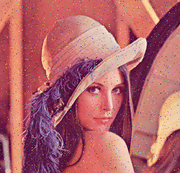

Die in dieser Übung zu erstellende Applikation
demonstriert die Funktionsweise verschiedener nichtlinearer Filter. Das
Eingangsbild wird zunächst mittels Salt & Pepper Rauschen gestört. Anschließend wird versucht, die Störungen durch geeignete Filter zu entfernen.

Ausgabe der Übung:
Fr, 14.10.2016
Abgabe spätestens am:
Mo, 24.10.2016 um 09:00 Uhr
Diese Aufgabe kann in Gruppen zu maximal 2 Personen bearbeitet werden.
Vorbereitungen
Laden Sie sich das Archiv Ue1_Vorgabe.zip herunter und entpacken Sie es in dem Ordner, den Sie als Workspace von Eclipse verwenden.
Benennen Sie den entpackten Ordner Ue1_Vorgabe um in Ue1_<Ihr(e) Nachname(n)>. Beispiel: Ue1_Schmidt oder Ue1_Schmidt_Schulz
Importieren Sie das Projekt in Eclipse: File -> Import... -> General -> Existing Projects into Workspace... Für die root directory wählen Sie den Ordner des Workspaces.
Achten Sie darauf, dass das Projekt die Java Runtime 1.7 verwendet. Das Programm sollte nun kompilieren.
Falls Sie noch Java 1.6 verwenden, müssen Sie alle Stellen JComboBox<String> des Quellcodes durch JComboBox ersetzen.
Wenn Sie das Programm starten, sehen Sie ein GUI mit
einigen Schaltflächen und zwei Bildbereichen. Im linken Bild ist
bereits lena_klein.png geladen, das rechte Bild ist leer.
Verschaffen Sie sich einen groben Überblick
darüber, wie diese Applikation programmiert ist. Lokalisieren Sie die
mit "TODO" gekennzeichneten Stellen, an denen Sie für die folgende
Aufgabenstellung Programmcode erstellen müssen.
Aufgabenstellung
Erstellen Sie eine Java-Anwendung mit folgenden Eigenschaften:
Automatisches Öffnen des Bildes lena_klein.png beim Programmstart (bereits vorgegeben).
Manuelles Öffnen anderer Bilder durch einen entsprechenden Button (bereits vorgegeben).
Automatisches Konvertieren der geöffneten Bilder in Graustufenbilder.
Stören des geladenen Bildes mittels Salt & Pepper Rauschen:
Mit einem Slider soll der prozentuale Anteil der zu verändernden Pixel festgelegt werden. (Bereich: 0% bis 30%)
Für die eingestellte Anzahl von Pixel werden durch einen Zufallsgenerator x- und y-Koordinaten bestimmt.
Vereinfachung:
Falls der Zufallsgenerator einen Punkt erzeugt, den Sie schon verändert
haben, so können Sie dies unberücksichtigt lassen, d.h. Sie verändern
diesen Punkt dann einfach noch einmal. (Damit haben Sie am Ende ggf.
weniger Pixel verändert, als Sie eigentlich wollten.)
Die Hälfte der zufällig gefundenen Pixel setzen Sie schwarz, die andere Hälfte weiß.
Zufallszahlen können Sie mit Math.random() erzeugen.
Filtern des gestörten Bildes und Anzeige des Resultats:
Zwischen folgenden Filtern soll man wählen können:
3x3 Minimumsfilter
3x3 Maximumsfilter
3x3 Box-Filter
3x3 Medianfilter
Für die Randbehandlung wählen Sie bitte die Methode "konstant
fortsetzen" wie sie unter Punkt (2) auf Folie 14 vom Foliensatz
01-Bildmanipulationen-mit-Filtern (im moodle) dargestellt ist.
Optionale Erweiterungen
Die folgenden Erweiterungen sind freiwillig. Durch ihre
Implementierung lernen Sie noch intensiver, wie man Filter effektiv und
übersichtlich implementiert (bitte kein copy & paste). Außerdem kann damit die Wirkungsweise der Filter noch besser veranschaulicht werden.
Erlauben Sie auch Störungen, deren Elemente nicht nur einzelne Pixel, sondern auch Blöcke gleicher Farbe sind:
1x1 Pixel
1x2 Pixel
2x1 Pixel
2x2 Pixel
Machen Sie die Größe der Filter variabel: 3x3, 5x5, 7x7, 9x9, usw.
Erlauben Sie die Verarbeitung von Farbbildern:
Bei der Berechnung der Störungen setzten Sie die Werte der
drei Farbebenen R, G, B zufällig auf 0 oder 255. Sie erhalten damit ein
buntes Salt & Pepper Rauschen.
Bei der Filterung filtern Sie die drei Farbebenen R, G, B unabhängig voneinander.
Hinweise
Achten Sie bei dieser Übung besser auf einen übersichtlichen
Source-Code als auf ein schnell laufendes Programm. (Optimaler Weise ist
der Source-Code übersichtlich und das Programm schnell. In der Praxis lässt sich das aber nicht immer umsetzen.)
Falls Sie einige der Erweiterungen implementieren möchten,
überlegen Sie sich bitte frühzeitig im Software-Design, wie Sie das
umsetzen würden.
{kind=link}